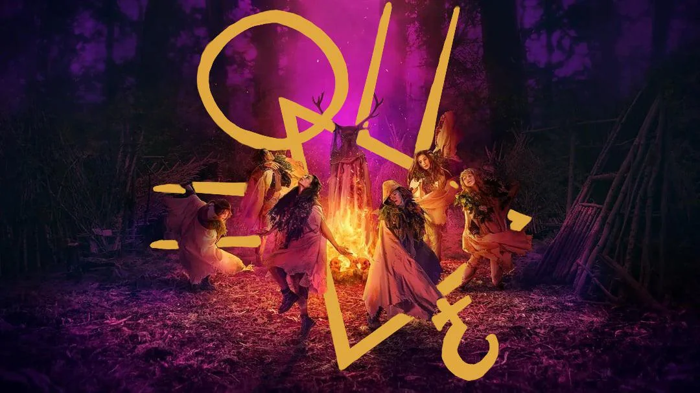

A Gripping Story of Survival
Yellowjackets is a psychological horror-drama series that follows a New Jersey high school girls’ soccer team whose plane crashes in the remote Canadian wilderness. With no immediate hope for rescue, the teenagers must learn how to survive in an environment completely foreign to them. At first, they cling to their structured team dynamic, holding onto hope that help will arrive, but as weeks turn into months, their situation grows more dire. Faced with starvation, freezing temperatures, and the looming threat of internal conflict, they slowly begin to lose their grip on morality. The series simultaneously follows the survivors 25 years later, revealing that some made it out—but they are forever changed by the horrors they endured. As the present-day women try to live normal lives, dark secrets from their past start to surface, threatening to unravel everything. Through its dual timeline storytelling, Yellowjackets delivers a compelling mystery that keeps audiences captivated, blending elements of psychological horror, survival drama, and supernatural intrigue.
A Blend of Mystery and Horror
What makes Yellowjackets so unique is its ability to seamlessly blend multiple genres, keeping viewers constantly on edge. The show begins as a survival drama, exploring the struggle for food, shelter, and leadership in an environment where the girls must rely on their instincts. However, as desperation sets in, paranoia and fear begin to fester, leading to eerie and often disturbing behavior. Ritualistic imagery and cryptic symbols appear throughout the series, leaving audiences to question whether there are supernatural forces at play or if the trauma of survival is distorting reality. The present-day storyline adds another layer of suspense, as the surviving women attempt to suppress their past while mysterious threats suggest someone—or something—wants the truth exposed. By utilizing nonlinear storytelling, the show masterfully controls the pacing of its reveals, slowly piecing together what happened in the wilderness while keeping audiences guessing about the consequences in the present. This delicate balance between psychological horror, paranoia, and possible supernatural elements makes Yellowjackets one of the most compelling and unsettling series in recent memory.